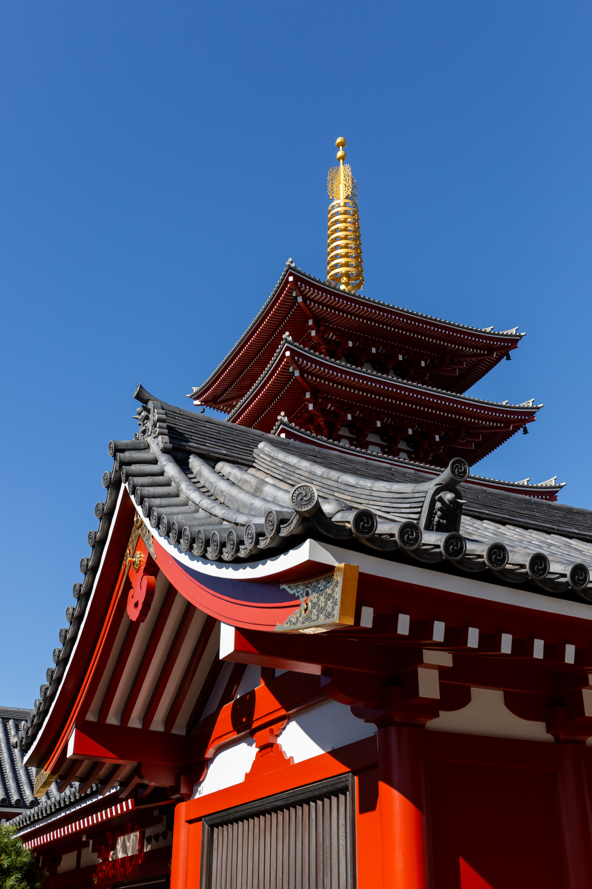

Japan Week at a Glance

For 2 adults, this route fits your dates, pace, and budget well: Tokyo (3 nights) → Kyoto (2 nights) → Osaka (2 nights, with one nature/cultural day). It balances neighborhoods, temples, food, and one lighter scenic day without rushing.
Tokyo 3 nightsKyoto 2 nightsOsaka 2 nights
7-Day Japan Itinerary
Day 1
DayDay 1
AreaTokyo
MorningArrive in Tokyo, airport transfer, hotel check-in, and a slow start.
AfternoonExplore Senso-ji Temple, Nakamise shopping street for snacks, and nearby Asakusa lanes.
DinnerTempura, soba, or donburi in Asakusa; keep it easy after the flight.
StayTokyo, Asakusa or Ueno
NotesGood transit and a calmer atmosphere.
Action LabelAsakusa Guide
Action URLhttps://www.gotokyo.org/en/destinations/eastern-tokyo/asakusa/index.html
Imagehttps://upload.wikimedia.org/wikipedia/commons/6/6e/Nishiki_Market%2C_Kyoto_-_Flickr_-_Sergiy_Galyonkin.jpg
Image AltExplore Senso-ji Temple, Japan
Day 2
DayDay 2
AreaTokyo
MorningVisit Ueno Park and choose one museum or just enjoy the park and shrine areas.
AfternoonWalk through Yanaka, one of Tokyo’s old neighborhood areas, with local shops and a slower pace.
DinnerCasual izakaya-style set meal or ramen in Ueno/Yanaka.
NotesBest for traditional streets, everyday Tokyo, and temple/neighborhood balance.
Action LabelUeno Info
Action URLhttps://www.gotokyo.org/en/destinations/northern-tokyo/ueno/index.html
Imagehttps://upload.wikimedia.org/wikipedia/commons/1/10/Lascar_Ueno-koen_Park_%281298835399%29.jpg
Image AltVisit Ueno Park, Japan
Day 3
DayDay 3
AreaTokyo
MorningVisit Meiji Jingu Shrine and the surrounding forested grounds.
AfternoonWalk Omotesando and quieter parts of Shibuya for cafés, design streets, and people-watching without focusing on nightlife.
DinnerSushi train, curry rice, or a teishoku set in Shibuya/Harajuku.
StayFinal Tokyo night before moving west.
Action LabelMeiji Jingu
Action URLhttps://www.meijijingu.or.jp/en/
Imagehttps://upload.wikimedia.org/wikipedia/commons/e/e5/Exterior_view_of_the_illuminated_facade_of_Maison_Herm%C3%A8s%2C_Ginza%2C_Tokyo%2C_Japan.jpg
Image AltTokyo, Japan
Day 4
DayDay 4
AreaKyoto
MorningTake the Tokaido Shinkansen from Tokyo to Kyoto; drop bags at hotel.
AfternoonExplore Higashiyama, including Kiyomizu-dera approach streets, Sannenzaka, and Ninenzaka.
DinnerKyoto-style set meal, tofu cuisine, or small kaiseki-style course at moderate budget.
StayKyoto, Gion/Shijo/Kawaramachi area
NotesFor walkability.
Action LabelKyoto Travel
Action URLhttps://kyoto.travel/en/
Imagehttps://upload.wikimedia.org/wikipedia/commons/4/4a/Bamboo_Forest%2C_Arashiyama%2C_Kyoto%2C_Japan.jpg
Image AltKyoto, Japan
Day 5
DayDay 5
AreaKyoto
MorningHead early to Arashiyama Bamboo Grove, then Tenryu-ji Temple.
AfternoonCross Togetsukyo Bridge, riverside stroll, and optional monkey park only if energy allows.
DinnerNoodles, yudofu, or Kyoto curry near central Kyoto.
NotesBest for your nature day, with light walking and scenic views rather than a strenuous hike.
Action LabelArashiyama Info
Action URLhttps://kyoto.travel/en/destinations/arashiyama/
Day 6
DayDay 6
AreaOsaka
MorningEarly visit to Fushimi Inari Taisha to avoid crowds; do a partial hike instead of the full summit for a medium pace.
AfternoonTravel to Osaka and check in; explore Nakanoshima, Utsubo Park, or Shinsekai by daylight rather than nightlife-heavy districts.
DinnerOsaka classics such as okonomiyaki or kushikatsu in a casual restaurant.
StayOsaka, Umeda or Namba
NotesChoosing a quieter side street hotel.
Action LabelOsaka Travel
Action URLhttps://osaka-info.jp/en/
Day 7
DayDay 7
AreaOsaka
MorningVisit Osaka Castle Park or Shitenno-ji Temple depending on departure timing.
AfternoonEarly food-focused walk at Kuromon Market or a daytime stroll around Dotonbori before heading to the airport.
DinnerIf you have time before departure, keep it simple near Namba/Umeda or at the airport.
NotesDeparture from Osaka (KIX or ITM depending on your ticket).
Action LabelKansai Airports
Action URLhttps://www.kansai-airport.or.jp/en/
Budget Breakdown for Two
Estimated total: USD 3,200
This is realistic if you book hotels early and keep most meals in the casual to mid-range band rather than splurge dining.
Hotels (6 nights)
CategoryHotels (6 nights)
Estimated Cost (USD)1,080
NotesPrivate ensuite rooms, mid-range business/boutique hotels at ~$160–$190/night
Intercity transport
CategoryIntercity transport
Estimated Cost (USD)260
NotesTokyo→Kyoto Shinkansen + Kyoto→Osaka local/regional train
Local transport
CategoryLocal transport
Estimated Cost (USD)180
NotesIC card use for subways, JR/local trains, airport transfers allowance
Food
CategoryFood
Estimated Cost (USD)900
NotesAbout $60–$75 per couple for lunch + $70–$85 for dinner + snacks on some days
Temple/museum/sight admissions
CategoryTemple/museum/sight admissions
Estimated Cost (USD)140
NotesMostly low-cost; many shrines are free
Miscellaneous/café/snacks
CategoryMiscellaneous/café/snacks
Estimated Cost (USD)180
NotesExtra drinks, desserts, lockers, small purchases
Buffer
CategoryBuffer
Estimated Cost (USD)460
NotesPrice variation, airport transfer differences, nicer meal or taxi if needed
Hotels and Transport Strategy
Best stay pattern
Tokyo
CityTokyo
Nights3 nights
AreasAsakusa, Ueno, or Ginza East
Target$150–$190/night
NotesPrivate double/twin room with private bathroom
Kyoto
CityKyoto
Nights2 nights
AreasGion, Shijo, Kawaramachi, or Kyoto Station
Target$160–$210/night
Osaka
CityOsaka
Nights1–2 nights
AreasUmeda for transit convenience or Namba for food access
Target$140–$180/night
Intercity transport suggestions
Tokyo → Kyoto
SegmentTokyo → Kyoto
SuggestionTokaido Shinkansen Nozomi is the fastest and easiest.
Kyoto → Osaka
SegmentKyoto → Osaka
SuggestionJR Special Rapid or local rail; cheap and simple.
Airport departure from Osaka
SegmentAirport departure from Osaka
SuggestionAllow extra transit time if flying from Kansai International Airport (KIX).
Pass advice
Nationwide JR Pass
OptionNationwide JR Pass
AdviceUsually not cost-effective
NotesFor this itinerary, it is usually not worth it.
IC card
OptionIC card
AdviceRecommended
NotesUse for city transport.
Individual Shinkansen tickets
OptionIndividual Shinkansen tickets
AdviceRecommended
NotesBuy for Tokyo→Kyoto.
Regular JR/private rail
OptionRegular JR/private rail
AdviceRecommended
NotesUse for Kyoto↔Osaka.
Practical Travel Notes
5 useful Japan tips
Carry some cash
TipCarry some cash
DetailsCards are widely accepted in cities, but small temples, older eateries, and some local shops may still prefer cash.
Tipping is not expected
TipTipping is not expected
DetailsIn Japan, standard service is built in; leaving tips can feel awkward.
Pack light layers
TipPack light layers
DetailsMid-April is mild, but mornings/evenings can be cool; bring a light jacket and comfortable walking shoes.
Use luggage forwarding if needed
TipUse luggage forwarding if needed
DetailsIf you dislike moving bags between cities, hotel-to-hotel forwarding can make the Tokyo→Kyoto move much easier.
Bring a small trash pouch
TipBring a small trash pouch
DetailsPublic trash bins can be limited, so carrying a small bag for wrappers/tissues is surprisingly handy.
Quick Booking Priorities
Hotels first
PriorityHotels first
DetailsBook hotels first, especially in Kyoto, since spring demand can be high.
Shinkansen reservation
PriorityShinkansen reservation
DetailsReserve the Tokyo→Kyoto Shinkansen once your arrival plans are firm.
Dinner planning
PriorityDinner planning
DetailsKeep dinners flexible except for one Kyoto dinner if you want a nicer traditional meal.
Sources
Japan National Tourism Organization
SourceJapan National Tourism Organization
Action LabelOpen source
URLhttps://www.japan.travel/en/
Go Tokyo official travel guide
SourceGo Tokyo official travel guide
Action LabelOpen source
URLhttps://www.gotokyo.org/en/
Kyoto City Tourism Association
SourceKyoto City Tourism Association
Action LabelOpen source
URLhttps://kyoto.travel/en/
Osaka Official Travel Guide
SourceOsaka Official Travel Guide
Action LabelOpen source
URLhttps://osaka-info.jp/en/
JR Central Tokaido Shinkansen
SourceJR Central Tokaido Shinkansen
Action LabelOpen source
URLhttps://global.jr-central.co.jp/en/